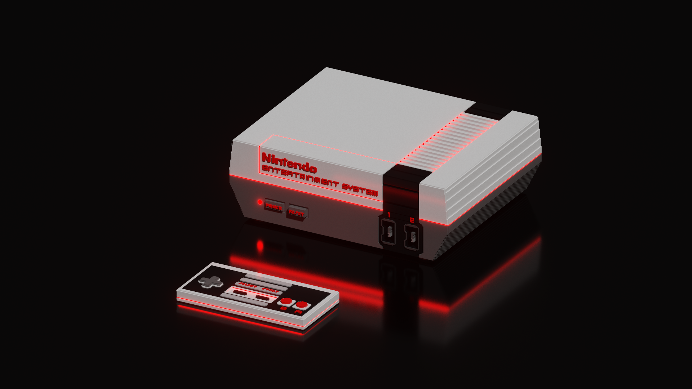
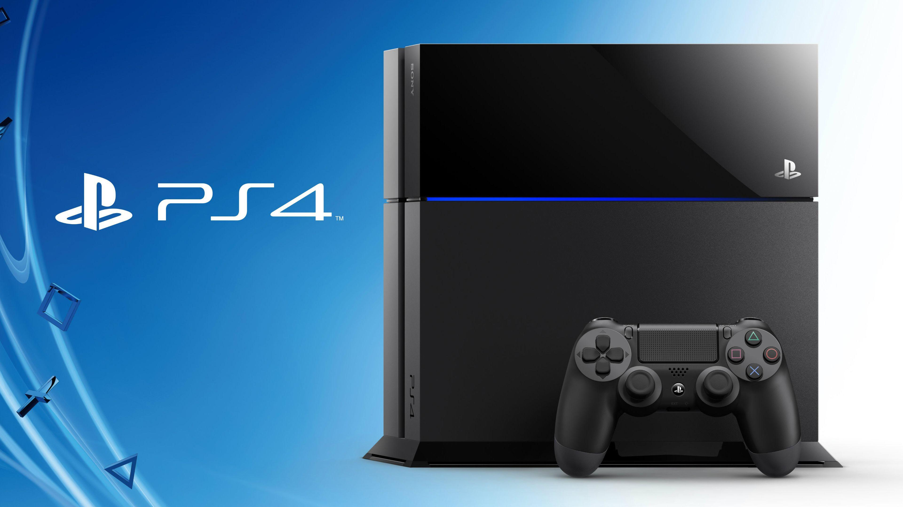

15 de Julho de 1983
NES

O Nintendo Entertainment System (NES, popularmente chamado de Nintendinho no Brasil) é um console de videogame de 8 bits lançado pela Nintendo na América do Norte, Europa, Ásia, Austrália e Brasil.
Originalmente lançado no Japão em 1983 com o nome de Nintendo Family Computer, Family Computer, ou apenas Famicom, o sistema foi redesenhado e recebeu o novo nome para ser lançado no mercado americano em 1985. O NES/Famicom foi o videogame de maior sucesso comercial na sua época, ajudou a indústria de videogames a se recuperar da crise de 1983 e estabeleceu novos padrões que seriam seguidos pela indústria. Também foi o primeiro console a ser produzido por terceiros, o que ajudou a divulgar o sistema em todo o mundo. O NES também foi um dos primeiros consoles a se apoiar em jogos feitos por terceiros (não só pela própria fabricante).Seu código de modelo é NES-001.
21 de novembro de 1990 (Japão)
SUPER NES

O Super Nintendo Entertainment System (Super NES, SNES ou Super Nintendo) é um console de videogame de 16 bits desenvolvido pela Nintendo que foi lançado em 1990 no Japão, 1991 nos Estados Unidos, 1992 na Europa e Australásia (Oceania) e América do Sul em 1993. No Japão, o sistema é chamado de Super Famicom (em japonês: スーパーファミコン, transl. Sūpā Famikon), oficialmente, adotando o nome abreviado do seu antecessor, o Famicom), ou SFC para breve. Na Coreia do Sul, é conhecido como Super Comboy e foi distribuído pela Hyundai Electronics. Embora cada versão seja essencialmente as mesmas, várias formas de bloqueio regional impedem que as diferentes versões sejam compatíveis entre si.
O Super Nintendo Entertainment System é o segundo console de mesa da Nintendo, sucessor do Nintendo Entertainment System (NES). O console apresentou gráficos e recursos de som avançados em comparação com outros consoles na época. Além disso, o desenvolvimento de uma variedade de chips de aprimoramento (que foram integrados em placas de circuito) ajudou a mantê-lo competitivo no mercado. Enquanto brutos gráficos tridimensionais raramente tinham sido vistos antes em consoles domésticos, utilizando o chip Super FX começando com Star Fox em 1993, o SNES foi capaz de rodar jogos com gráficos tridimensionais suaves e mais detalhados do que era anteriormente possível. Isso despertou interesse mais difundido em gráficos de polígono na indústria, ajudando a inaugurar os gráficos 3D, como pode ser visto na quinta geração de consoles de videogame.
O SNES foi um sucesso mundial, tornando-se o console mais vendido da época apesar de seu início relativamente tardio e a competição feroz que enfrentou na Europa e América do Norte. O SNES permaneceu popular até a era de 32 bits e continua a ser popular entre os fãs, colecionadores, retro gamers e entusiastas de emulação, alguns dos quais ainda estão fazendo imagens ROM homebrew. O sucesso de sua venda foi superior a 50 milhões de unidades por todo o mundo. O SNES foi oficialmente descontinuado em setembro de 1999 nos Estados Unidos, e em setembro de 2003, no Japão. O último jogo oficialmente lançado para a plataforma foi Metal Slader Glory: Director's Cut tendo sido lançado exclusivamente no Japão em novembro de 2000.
3 de dezembro de 1994
PlayStation

O PlayStation (プレイステーション Pureisutēshon?, oficialmente abreviado PS, comumente chamado de PlayStation 1 ou PS1) foi o primeiro console de videogame fabricado pela Sony, lançado em 3 de dezembro de 1994 no Japão, 9 de setembro de 1995 nos Estados Unidos e em 29 de setembro de 1995 na Europa.
O desenvolvimento do console começou após uma parceria fracassada com a Nintendo de desenvolver um CD-ROM para seu console Super Nintendo no início dos anos 1990. A produção de jogos para o console foi projetada para ser simplificada e inclusiva, trazendo o suporte de muitas desenvolvedoras terceiras. Em julho de 2000, uma versão melhorada e mais fina chamada de PS One foi lançada, substituindo o console cinza original e nomeado apropriadamente para evitar confusão com seu sucessor, o PlayStation 2.
O PlayStation introduziu a Sony para a indústria de jogos eletrônicos. O uso de CDs para o armazenamento dos jogos no console foi uma transição dos cartuchos utilizado por outras empresas de jogos. Desde o seu lançamento até 2006, quando sua produção de jogos foi interrompida, o PlayStation vendeu mais de 100 milhões de unidades.[4][5] Ocupa a posição de sexto console mais vendido no mundo, com mais de cem milhões de unidades vendidas. Foi sucedido pelo PlayStation 2, que teve mais de 150 milhões de unidades comercializadas
22 de Novembro de 1994 no Japão
Sega Saturn

O Sega Saturn foi um console de jogos eletrônicos de quinta geração, lançado pela empresa Sega em 22 de Novembro de 1994 no Japão,11 de Maio de 1995 na América do Norte, 30 de agosto de 1995 no Brasil e 8 de Julho na Europa. Foi o sucessor do bem sucedido Sega Genesis. O Saturn tem uma arquitetura de CPU dupla e oito processadores. Seus jogos utilizam a mídia CD-ROM e sua biblioteca de jogos contou com várias portes de jogos de arcade e também jogos originais desenvolvidos para o console.
O desenvolvimento do Saturn começou em 1992, no mesmo ano que um novo hardware de arcade 3D intitulado Model 1 da Sega havia sido lançado. O Saturn foi projetado em torno de uma nova CPU fabricada pela empresa japonesa de eletrônicos Hitachi. No final de seu desenvolvimento, a Sega adicionou um novo processador de vídeo no início do ano de 1994 para competir com o primeiro console da Sony, o PlayStation.
Tornou-se um console popular no Japão devido ao marketing de sucesso, com o personagem Segata Sanshiro criado especialmente para o marketing do Sega Saturn, porém ele não conseguiu repetir o mesmo sucesso na América do Norte e na Europa diferente de seus concorrentes, o Playstation e o Nintendo 64. O console vendeu 9,26 milhões de unidades em todo o mundo, um fracasso comercial; o cancelamento de Sonic X-treme foi um dos fatores pelo seu baixo desempenho no mercado. O Saturn foi sucedido em 1998 pelo Dreamcast. O console foi descontinuado na Europa e Austrália em 1998, em Abril de 1999 na América do Norte e em 23 de Dezembro de 2000 no Japão.
23 de junho de 1996
NINTENDO64

Nintendo 64 (com a grafia estilizada NINTENDO64, e frequentemente abreviado de N64), é um console de jogos eletrônicos da quinta geração lançado pela empresa japonesa Nintendo, em 23 de junho de 1996 no Japão. Lançado como a quinta geração de consoles da Nintendo, foi uma revolução no mercado da época, graças à sua arquitetura de 64 bits, que permitiu introduzir 3D nos jogos, tornando-os mais imersíveis.
Contava com três títulos de lançamento disponíveis: Super Mario 64, PilotWings 64 e Saikyou Habu Shogi. Nos EUA e no Brasil foi lançado simultaneamente em 29 de setembro de 1996, e, em ambos os países, havia apenas dois títulos de lançamento disponíveis: Super Mario 64 e PilotWings 64; mas, enquanto nos EUA os títulos eram vendidos à parte, no Brasil, o console vinha com o cartucho de Super Mario 64 incluso. Já quando foi lançado na Europa, em 1 de março de 1997, o console contou com sete jogos de lançamento: além de Super Mario 64 e PilotWings, havia Wayne Gretzky's 3D Hockey, Cruis'n USA, Star Wars: Shadows of the Empire, FIFA Soccer 64 e Turok: Dinosaur Hunter.
O Nintendo 64 foi o último grande console doméstico a utilizar cartucho até o Nintendo Switch, lançado em 2017.
No Brasil, foi lançado oficialmente pela Playtronic, e, a partir de 1997, pela empresa Gradiente Eletrônicos, que assumiu a representação da Nintendo no país. Em Portugal, foi distribuída pela Concentra.
O console foi anunciado em 1993 com o codename "Project Reality", com plano de lançamento para arcades em 1994 e uma versão doméstica no ano seguinte. Em 1995, fora primeiro apresentado com o nome Nintendo Ultra 64, tendo o nome reduzido para Nintendo 64 em fevereiro de 1996 (5 meses antes do lançamento). Seu código de modelo é NUS-001 (cuja sigla significa Nintendo Ultra Sixty Four - o codinome do projeto).
O N64 possuía um hardware complexo, o que tinha um preço: os programadores afirmavam que era um grande desafio manter todos os processadores da máquina trabalhando em sincronia.
4 de março de 2000
PlayStation 2

O PlayStation 2 (oficialmente abreviado como PS2) é um console de jogos eletrônicos produzido pela Sony Computer Entertainment (SCE). Foi lançado no dia 4 de março de 2000 no Japão, no dia 26 de outubro na América do Norte, e posteriormente, no dia 24 de novembro na Europa. É o sucessor do PlayStation original. O PlayStation 2 é um console de sexta geração, que competiu com o Dreamcast da Sega, o GameCube da Nintendo e o Xbox da Microsoft.
Devido à imensa popularidade em todo o mundo, o console, assim como seus jogos, continuaram a ser fabricados mesmo após o lançamento do seu sucessor, o PlayStation 3. Somente depois de 13 anos do seu lançamento, perto do anúncio do lançamento do PlayStation 4, que o jornal japonês Asahi Shimbun anunciou o encerramento da fabricação do console no Japão no dia 30 de dezembro de 2012. E no dia 4 de janeiro de 2013, o jornal britânico The Guardian anunciou que a Sony encerrou a produção dos consoles PlayStation 2 no mundo inteiro.
O PS2 é o console de videogame mais vendido de todos os tempos. De acordo com dados provenientes da Sony de 31 de março de 2012, foram vendidas mais de 155 milhões de unidades de PlayStation 2 e mais de 420 milhões de unidades de jogos originais do console. Foram lançados mais de 4000 jogos oficiais, licenciados para o console. O último jogo lançado para PlayStation 2 foi Pro Evolution Soccer 2014 lançado em 8 de novembro de 2013.
12 de maio de 2005
Xbox 360

Xbox 360 é um console de video games desenvolvido pela Microsoft. Como sucessor do Xbox original, é o segundo console da série Xbox. Ele competiu com o PlayStation 3 da Sony e o Wii da Nintendo como parte da sétima geração de consoles. Foi oficialmente anunciado na MTV em 12 de maio de 2005, com lançamento detalhado e informações dos jogos anunciadas mais tarde na edição de 2005 da E3.
O Xbox 360 possui um serviço online, a Xbox Live, que foi expandida a partir de sua iteração anterior no Xbox original e recebeu atualizações regulares durante a vida útil do console. Disponível em variedades gratuitas e baseadas em assinatura, a Xbox Live permite aos usuários jogar jogos online; baixar jogos (através da Xbox Live Arcade) e demos; comprar e transmitir músicas, programas de televisão e filmes através dos portais Xbox Music e Xbox Video e acessar serviços de conteúdo de terceiros através de aplicativos de transmissão de mídia. Além dos recursos multimídia on-line, ele permite aos usuários transmitir mídia de PCs locais. Vários periféricos foram lançados, incluindo controles sem fio, discos rígidos com armazenamento expandido e a câmera sensora de movimentos: o Kinect. O lançamento desses serviços adicionais e periféricos ajudou a marca Xbox a crescer a partir de jogos para englobar todos os multimídia, transformando-o em um hub para entretenimento na sala de estar.
Lançado em todo o mundo entre 2005 e 2006, o Xbox 360 foi inicialmente escasso em muitas regiões, incluindo a América do Norte e a Europa. As primeiras versões do console sofreram uma alta taxa de falha, indicada pelas chamadas "Três Luzes Vermelhas", exigindo uma extensão do período de garantia do dispositivo. A Microsoft lançou dois modelos redesenhados do console: o Xbox 360 S em 2010, e o Xbox 360 E em 2013. Em junho de 2014, 85,60 milhões de consoles Xbox 360 foram vendidos em todo o mundo, tornando-se o sexto console de videogames mais vendido da história, e o console mais vendido feito por uma empresa americana. Embora não seja o console mais vendido de sua geração, o Xbox 360 foi considerado pelo TechRadar como o mais influente através da sua ênfase na distribuição de mídia digital e jogos multiplayer na Xbox Live.
21 de maio de 2013
Xbox One

O Xbox One é uma linha de consoles de videogames domésticos de oitava geração desenvolvida pela empresa Microsoft, lançado em 2013, como a terceira edição da série Xbox e o sucessor do Xbox 360. Competiu diretamente com os consoles PlayStation 4 e Nintendo Switch.
Foi introduzido no mercado oito anos após o lançamento do Xbox 360. O Xbox One apresenta jogos com gráficos de alta definição superiores aos vistos no seu antecessor. Foi anunciado no dia 21 de maio de 2013, apresentado ao público pelo presidente de negócios de entretenimento interativo da Microsoft, Don Mattrick, no evento especial Xbox Reveal, como o sucessor do Xbox 360. Seu lançamento oficial foi feito em novembro de 2013 custando US$ 499,00 (€ 499,00 ou R$ 2 299,00). O codinome de desenvolvimento do Xbox One foi denominado de Durango e foi anunciado oficialmente no dia 21 de maio de 2013.
Após o lançamento do console, a Microsoft revelou que seria necessário que o console tivesse uma conexão com a internet constante para funcionar, afirmando que traria uma série de benefícios, incluindo desenvolvedores que serão capazes de confiar em uma conexão com servidores da Microsoft para computação em nuvem e permitindo a partilha de títulos de jogos. Jogadores teriam que autenticar o seu jogo a cada 24 horas através de uma conexão constante com a internet, incluindo single-player e jogos offline. Além disso, as restrições de gerenciamento de direitos digitais significaria que os jogadores seriam obrigados a trocar seus jogos apenas nas lojas participantes, enquanto que os discos só podem ser compartilhados uma vez, e apenas com um amigo que tinha estado na lista amiga do jogador por mais de 30 dias. A recepção da indústria e dos consumidores foram em grande parte negativa. Em resposta, em 19 de junho a Microsoft revelou uma inversão da política, detalhando que as restrições de jogos usados seriam descartados, e que tanto os jogos físicos e os jogos com conteúdo digital funcionariam como acontece no Xbox 360, sem a conexão constante com a internet (porém, será necessário a conexão com a internet na primeira vez que o console for ligado), e que jogos podem ser compartilhados com os amigos, sem autenticação, enquanto que os títulos digitais serão vinculados à conta. Será necessária a conexão de uma só vez, a fim de atualizar o console com um patch.
O Xbox One recebeu críticas positivas principalmente pelo design refinado de seu controle, recursos multimídia e navegação por voz. Seu design mais silencioso e mais frio foi elogiado por tornar o console mais confiável do que seu antecessor no lançamento. Sua interface de usuário original foi criticada por não ser intuitiva, embora as alterações feitas nele e em outros aspectos do pós-lançamento do software do console tenham recebido uma recepção positiva. O Kinect recebeu elogios por sua precisão aprimorada, logins de reconhecimento de rosto e comandos de voz.
O modelo original do Xbox One foi sucedido pelo Xbox One S em 2016, que possui dimensões reduzidas e suporte para vídeo de alto alcance dinâmico HDR10, além de suporte para reprodução de vídeo em 4K e aprimoramento da resolução de jogos de 1080p para 4K. Foi elogiado por seu tamanho menor, suas melhorias visuais e sua falta de fonte de alimentação externa, mas suas regressões, como a falta de uma porta Kinect nativa, foram observadas. Um modelo top de linha, chamado Xbox One X, foi apresentado em junho de 2017 e lançado em novembro; possui especificações de hardware atualizadas e suporte para renderização de jogos com resolução 4K. O Xbox One X e o Xbox One S All-Digital Edition foram descontinuados em Julho de 2020 devido ao lançamento do Xbox Series X em novembro de 2020.
O Xbox One S, única versão que ainda estava sendo fabricado do Xbox One, foi oficialmente descontinuada em dezembro de 2020, sendo confirmada oficialmente a informação só em Janeiro de 2022. O motivo foi que a 'Gigante de Redmond', Microsoft, disse que já existe a versão do Xbox Series S, similar ao Xbox One, contudo, mais poderoso e jogável, e que ficariam concentrado os esforços só nas versões do Xbox Series.
15 de Novembro de 2013
PlayStation 4

A PlayStation 4 (プレイステーション4 Pureisutēshon Fō?, oficialmente abreviada como PS4) é uma consola de videojogos, da oitava geração com arquitetura x86, produzida pela empresa Sony Interactive Entertainment e lançada em Novembro de 2013, como a quarta edição da série PlayStation, sucessora da PlayStation 3, competindo directamente com a Wii U da Nintendo e, com a Xbox One da Microsoft.
Foi anunciada em Fevereiro de 2013 durante uma conferência de imprensa da Sony em Nova Iorque, no evento "PlayStation Meeting 2013" cujo tema foi "O Futuro da PlayStation". Foi lançada na América do Norte a 15 de Novembro de 2013, na Europa e América do Sul a 29 de Novembro de 2013 e no Japão a 22 de Fevereiro de 2014. A PlayStation 4 é a primeira consola da Sony a ser oficialmente e legalmente editada na China desde a PlayStation 2, depois do levantamento da proibição que durou 14 anos.
Afastando-se da arquitectura Cell da sua antecessora, a PlayStation 4 é a primeira da série da Sony que apresenta arquitectura x86, mais especificamente com a Unidade de Processamento Acelerado (UPA) AMD x86-64, uma plataforma amplamente usada e comum em muitos dos microcomputadores modernos. A ideia é fazer com que o desenvolvimento de jogos eletrónicos seja mais fácil para a consola, atraindo uma ampla gama de grandes e pequenos produtores. Estas mudanças destacam o esforço da Sony para melhorar as lições aprendidas durante o desenvolvimento, produção e lançamento da PlayStation 3. Outros recursos de hardware notáveis da PlayStation 4 incluem 8GB GDDR5 de memória, um leitor Blu-ray mais rápido e um GPU que consegue um desempenho de 1.843 TFLOPS/s. Em conversa para a revista Edge, vários produtores de videojogos descrevem a diferença de desempenho entre a PlayStation 4 e a Xbox One como "'significativa' e 'óbvia'".
A consola permite vários métodos de interactividade com outros serviços e aparelhos incluindo; a PlayStation App, uma aplicação que melhora e expande a interactividade com a consola usando aparelhos iOS e Android; o Remote Play, que permite activar a PlayStation 4 à distância para continuar a jogar num segundo ecrã via PlayStation Vita ou dispositivos Xperia; o PlayStation Now, um serviço de computação em nuvem baseado em Gaikai, que oferece videojogos e outros conteúdos em stream. Pela incorporação de um botão de partilha (SHARE) no novo comando, o DualShock 4, faz com que seja possível exibir conteúdo que está a ser jogado e transmitido ao vivo aos amigos, ou mesmo partilhar jogos através da característica ‘Share Play’, desta maneira a Sony planeia colocar assim mais foco nos aspectos sociais da consola.
Foi muito bem recebida pelos críticos e pelos consumidores com as análises a destacarem o design, o novo DualShock 4 e o hardware. Um sucesso comercial, a PlayStation 4 vendeu mais de um milhão de unidades nas primeiras 24 horas e, até Março de 2020, já tinham sido vendidas mundialmente mais de 110,4 milhões de unidades, estando entre as consolas mais vendidas de sempre.
Em setembro de 2016, a Sony revelou dois novos sistemas, revisões do hardware da PlayStation 4: a versão “slim”, que corresponde a um design menor do sistema original; e a versão "Pro", com uma GPU melhorada e a CPU com frequência de relógio aumentada para suportar jogos na resolução 4K e com mais capacidade de armazenamento.
12 de novembro de 2020
PlayStation 5

O PlayStation 5 (oficialmente abreviado como PS5) é um console de jogos eletrônicos de nona geração, desenvolvido pela Sony Interactive Entertainment. Foi anunciado em outubro de 2018 e confirmado em outubro de 2019 como o quinto da série PlayStation e sucessor do PlayStation 4. O console foi lançado em 12 de novembro de 2020 na América do Norte, Austrália, Coreia do Sul, Japão, Nova Zelândia e Singapura. E em 11 de dezembro de 2020 foi lançado nas Filipinas. 19 de novembro para o resto do mundo.A plataforma foi lançada em duas versões, um sistema com entrada para disco óptico compatível com Blu-ray Ultra HD para suporte a jogos lançados em mídia física ou baixados através da PlayStation Store e uma versão digital de menor custo sem a unidade de disco, utilizando apenas o download digital.
O PlayStation 5 possui uma unidade de estado sólido personalizada projetada para a leitura de dados de alta velocidade para permitir melhorias significativas no desempenho gráfico. O hardware também possui uma GPU AMD personalizada capaz de fornecer suporte a Ray-tracing, displays de resolução 4K e até 120 quadros por segundo, um novo hardware de áudio para efeitos de áudio 3D em tempo real e retrocompatibilidade com a maioria dos jogos do PlayStation 4 e PlayStation VR.
10 de novembro de 2020
Xbox Series X/S

O Xbox Series X e Series S (coletivamente chamados de Xbox Series X/S) são consoles domésticos de jogos eletrônicos desenvolvidos pela Microsoft. É a quarta geração da família de consoles Xbox; foi anunciada pela primeira vez durante a E3 2019 como Project Scarlett. Ambos os consoles foram lançados em 10 de novembro de 2020.
Ambos os consoles sucedem a linha atual do Xbox One, substituindo o carro-chefe do Xbox One X e os modelos de baixo custo do Xbox One S, respectivamente. A Microsoft está priorizando o desempenho do hardware, incluindo suporte para resoluções de tela mais altas (até 8K de resolução) e taxas de quadros, ray tracing em tempo real e uso de unidade de estado sólido de alta velocidade para reduzir o tempo de carregamento. O Xbox Series S usa a mesma CPU e GPU, memória e armazenamento interno reduzidos e não possui uma unidade óptica.
A Microsoft está promovendo uma abordagem centrada no jogador para seu novo hardware, incluindo atualizações gratuitas de versões aprimoradas de jogos do Xbox One por meio de sua iniciativa "Entrega Inteligente", jogos otimizados para o hardware e retrocompatibilidade de jogos dos Xbox anteriores, controles e acessórios. O consoles também aproveitaram as vantagens do serviço de assinatura de jogos Xbox Game Pass, bem como jogos remotos em nuvem em dispositivos móveis por meio de sua plataforma de jogos em nuvem xCloud.